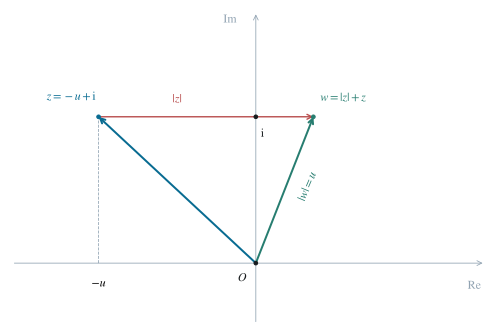

2.1 比较虚部并确定实部符号
设 z=a+bi，其中 a,b∈R。模 ∣z∣+z 为实数，因此比较原等式的虚部得到 b=1。
此时 ∣z∣+z 的虚部为 1，其模严格为正；比较实部得到 a<0。令 u=−a>0，则：
z=−u+i,∣z∣=u2+1. （1）2.2 把复数方程化成实方程
对复数 r+si，模定义为 r2+s2。这里 ∣z∣ 是正实数，将它加到 z=−u+i 上只改变实部，故 ∣z∣+z=(u2+1−u)+i。原方程实部又要求这个复数的模等于 u，所以：
(u2+1−u)2+1=u,u>0. （2）等号两边均为正数，因此第一次平方是等价变形。展开平方、移项后得到：
(u2+1−u)2+12u2+2−2uu2+12uu2+1=u2,=u2,=u2+2. （3）2.3 再次平方并确定唯一候选值
对所有 u>0，最后一式两边仍均为正数，故再次平方也是等价的。
4u2(u2+1)4u4+4u23u4=(u2+2)2,=u4+4u2+4,=4. （4）若 0<u1<u2，则 u24−u14=(u2−u1)(u2+u1)(u22+u12)>0，所以 u↦u4 在正实数上严格递增。方程 u4=34 的正根唯一，因而原方程至多有一个解，其候选值为：
u=434. （5）2.4 回代验证并写出答案
由 3u4=4 得 4u2(u2+1)=(u2+2)2。因为两边所对应的平方根都为正，恢复得到 2uu2+1=u2+2，从而：
(u2+1−u)2+1=2u2+2−(u2+2)=u2. （6）再因 u>0，从模的平方为 u2 可以恢复外层模为 u，故原等式左侧为 u+(−u+i)=i，候选值确实给出一个解。结合上一步的唯一性，得到全部解如下。两种根式写法相等，是因为 (34108)4=81108=34，且两者都是正数。
z=−434+i=−34108+i. （7）
图 1. 复平面中的两次运算：z 水平平移 ∣z∣ 得到 w，再由 ∣w∣+z=i 确定实部。